hello! my name is june ✌ (she/they) and i am the webmaster of every website in the world. i like to pretend i make things. scientists are still undecided whether this is true.
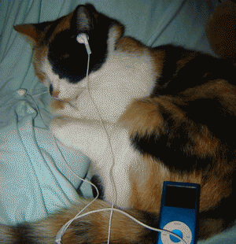
i really enjoy loud/emo/artsy music & ocean imagery & funny little animals (especially cats) & stories with unusual mediums & downing large amounts of black tea, two sugars.
as a person... i'm about as lazy as a real cat (although i get sucked into my personal projects easily & for hours on end) & if we're close i'm about as abrasive as a cat too. i'm very excitable about the things i like & my love language is recommending things to you and talking about them together. i laugh a lot and at my own jokes. you're jealous of my whimsy
my hobbies tend to straddle the big stem/humanities wall. i like designing webpages, making little chiptune songs, writing poems, coding games, drawing, and working on whatever story i happen to be daydreaming about at the time. i'd also like to learn blender someday... and get better at art... and learn french... and asl... and an instrument... and, um,
coding. i really enjoy puzzles, and coding is like an endless series of them that i can work away at and come away from with a sense of accomplishment and it also makes me forget that time exists but its okay. #forgiveness
but my interest in code only exists insofar as it serves my primary interests, which lie first and foremost in (1) making pretty stuff and (2) telling stories! web design speaks to me especially cause i get to do those things. i'm building this site like a big patchwork quilt—every page is something different, trying something new.
i put my coding projects up on my github sometimes. it's mostly unfinished godot games i'd like to finish one day. which i will! one of them. eventually...
stories. for basically as long as i can remember, i've been daydreaming about custom dnd settings and stories impossible to put to paper. my hobby as a tiny little baby was thwacking out the beginning chapters to best-selling book trilogies.
for more than a year now, i've been working on a long-form worldbuilding/comic project called cat comic.
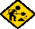
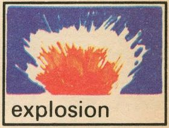
music. i really like talking about my music taste! frankly i have very good music taste. the best possibly.
you can listen to some page-appropriately flavored selections down there 👇.
my signature band is glass beach! tfgba i will forever be very sentimental about & plastic death is one of my actually favorite albums. it's the only vinyl i own, actually, & she is GORGEOUS. (this one!)
more generally... i'd say my favorite genres are math rock & emo. lyrics are really important to me—i enjoy the obtuse & dense bc my favorite thing to do with albums is slowly pick them apart. i got to crack that baby open like a shellfish !!
games. i'm a sick freak for roguelikes and puzzlegames, especially if they're hard. here's a list of games i've played and really enjoyed... stars mean i've 100%'d them!
- disco elysium (number one game. ever)
- celeste ⭐️
- baba is you ⭐️
- night in the woods
- hades
- loop hero (94% ⋯ )
- oneshot
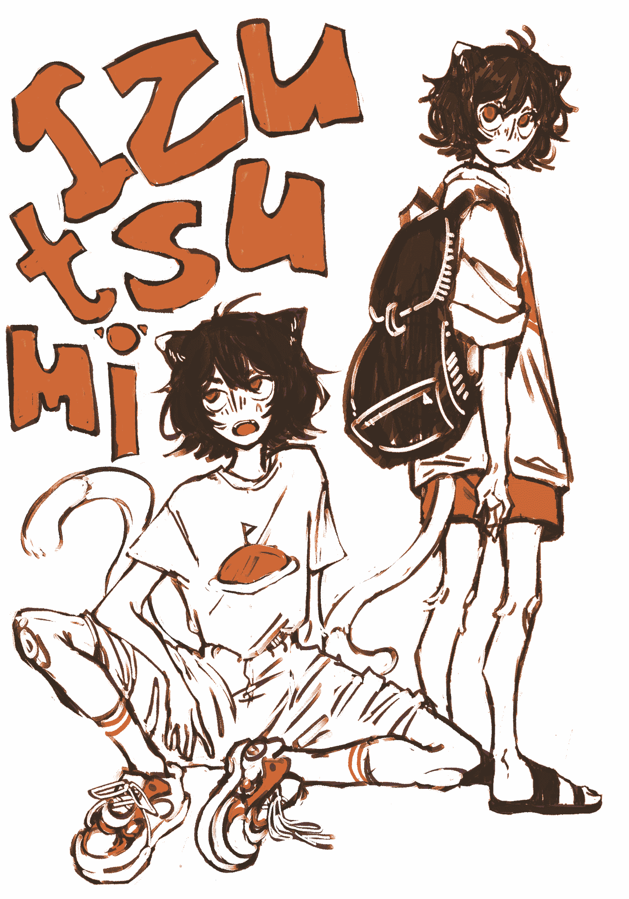
- playing stardew valley
- listening to party favors by sir chloe
- reading insomniac city by bill hayes
- working on cat comic
 , bad dream
, bad dream
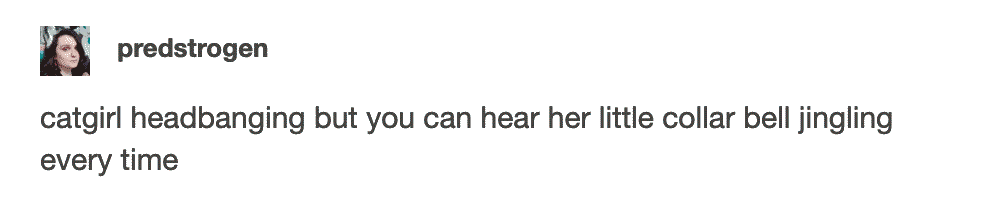

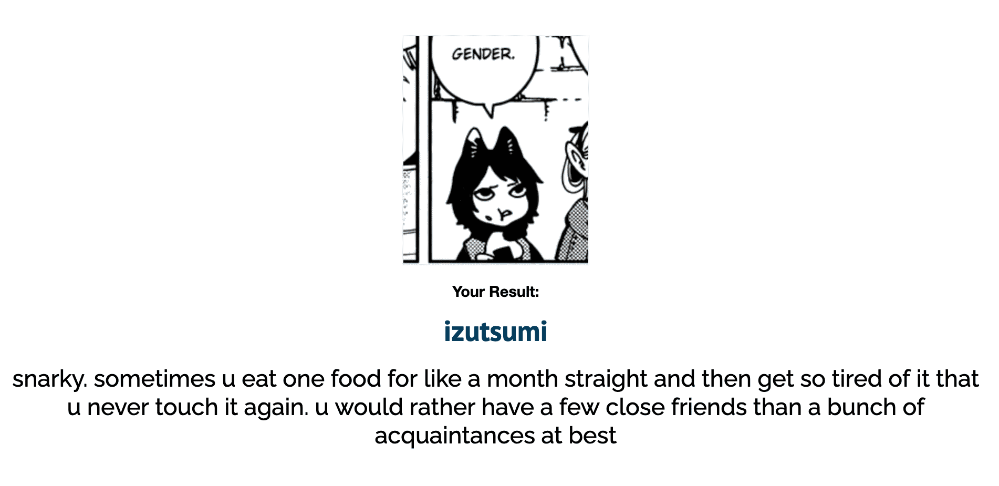
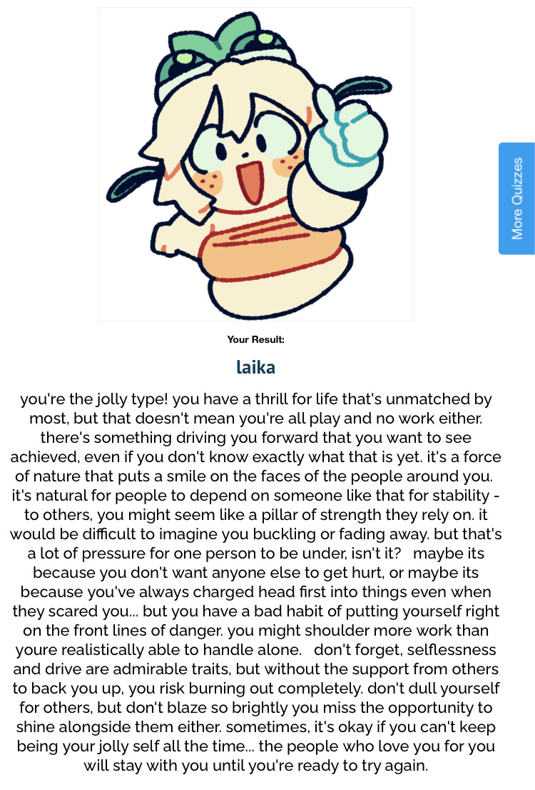
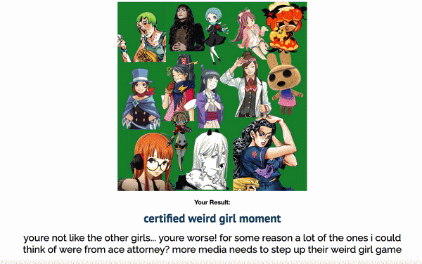

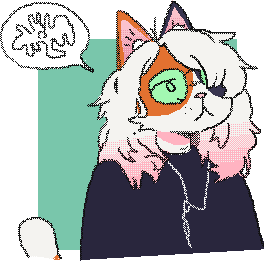
June is a real human girl-cat with flesh, blood, organs, and no stuffing. She has no seams. She is not animated by any unnatural force.
She is a self-dyed calico cat. In Aerie, the setting in which she is loosely placed, common fur-dyes are bioluminescent—which is fun at parties but less fun walking home. If you asked her about her natural coloration she'd respond with some colorful language, so let's just say she has a strong dislike of the superstitious.
Her glasses are fashioned out of seaglass. They have a magical ability to improve her vision, through a mystical technique called refractive error correction. They also make everything green... which she wouldn't know, cause cats are red-green colorblind.
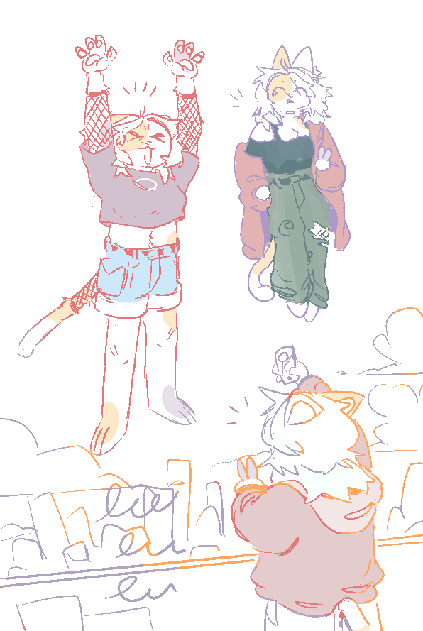
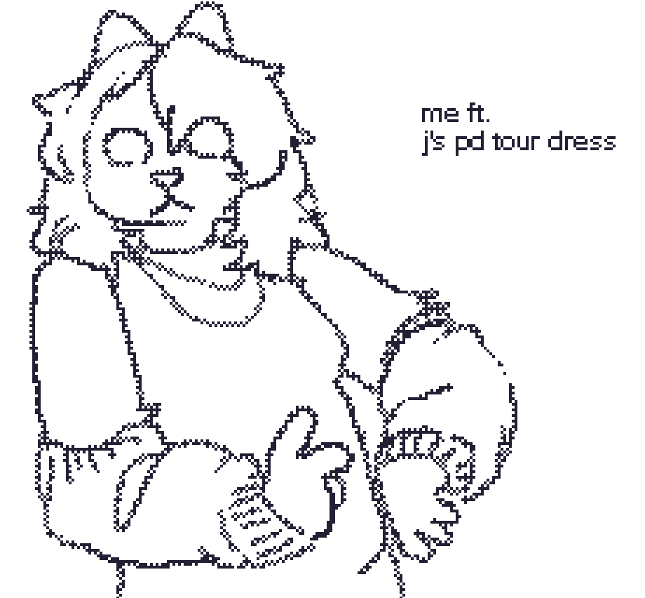


i started this site on june 17th, 2022. i still remember how i came upon neocities—i was looking through marginalia because of a tumblr post i chanced upon, then happened to find localfool's neocities, decided to check out the neocities browser, got inspired, and ended up signing up and starting my own site.
which is all so much chance! it's wild. the friends i've made on neocities are really dear to me, and to think that all of it could just have well not have happened... hhrahhh.
the site was originally under the name tealcrows, then juneery, then junery, and finally webcatz. also i think it was under its-tz at some point? don't remember. point is, the site's gone through a lot of changes since its early days in a hotel room dizzy from covid. if you're curious, you can view older versions of the site in the archive.
webcatz.neocities.org is coded in vscode, tested in firefox, and deployed from github.